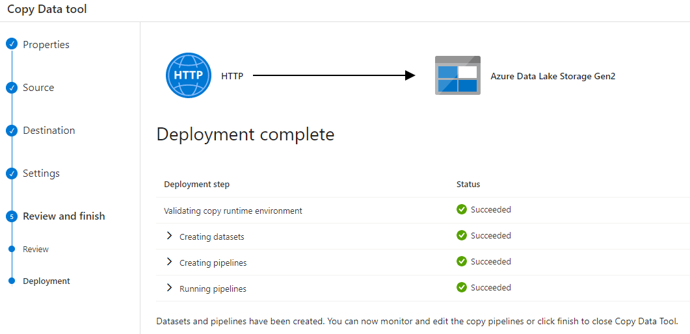

Intro
In the last entry we laid out an Apache Spark foundation locally to our laptop, using some Docker containers. This time around, let’s look at what a Cloud-based alternative can look like.
We’re going to have a look at Azure Synapse.

Many things in one service
That’s what is advertised. And being cloud based, it might be “easier” to setup, for simple/basic configurations (I’m sure making things perfect will require a lot more effort).
Up front, it seems one gets access to:
a “Datalake” storage,
Serverless SQL Resource Pool to query it (or with Server),
some kind of Spark implementation,
and Notebooks to interact with these things
(and more, but those are the main aspects I’m interested in).
Notebooks unfortunately apparently don’t sport R support 🙁
Oh well, I’ll have to brush up on my Python for once…
Getting started
It might not be all that hard:
Let’s take the 30 days challenge (hopefully a bit faster than that) to have a look. These Microsoft “challenges” help you actually get into concepts WHILE practicing.
I often advocate that a good way to learn is to “do”, not just to read. (And teaching is another way to learn some more!)
The challenge itself is not the goal (I don’t necessarily care about the complete challenge, as much as getting acquainted with Azure Synapse itself for my own learning purposes). If I finalise it in time, all the better, but I feel no pressure to get there.
I already have an Azure account and a “Free trial” Subscription (from past exercises getting to know more about Azure), let’s try to use that to follow the steps in the following tutorial:
https://microsoftlearning.github.io/mslearn-synapse/Instructions/Labs/01-Explore-Azure-Synapse.html
Some results for that first lab are shown next.
Deploying & IaC
One of the coolest things about Cloud, if you ask me, is the concept of “Infrastructure as Code”. Creating a whole infrastructure from just text file(s) is something that I think is just brilliant. (Back in… 2009 I think, I participated in a project with a similar idea, to deploy standardised Windows Virtual Machines on VMWare clusters using just scripts, for configuring deployed software packages, networking, users, etc. (Long story short, it worked.))
Here the people at Microsoft have put together a whole Powershell script for us, so we just need to run it from a shell prompt in our subscription:

It even loads the datasets for the exercises for us. All by running one command line.
Brilliant.
After maybe 15 minutes, the subscription resources look like so:

Connecting to other data sources
One part of the first exercises is about connecting to a CSV file published somewhere on the Internet and saving it into the “Azure Datalake Storage Gen2”. The fact that we are loading a CSV into a Data “Lake”, not a table, i.e. not doing much of a transformation yet, will be an interesting fact in itself in a moment.

Reading a CSV as a SQL table (without a SQL Server)
Things get powerful when to work using SQL code with a CSV, all you need to do is “load” the CSV as an input to a “serverless” SQL resource pool.
Now I can do SQL queries on files without installing (myself) basically anything. Kind of like importing a CSV into Excel and Excel putting things into columns on its own… But all from a browser, with a SQL-compatible language. I don’t know, I just liked that one:

And it is my understanding one could do something similar with JSON files, too. Nice.
Playing with Spark from Python
And finally (for today) this: You can use PySpark to play from a Python Notebook with your data, treating it as a Dataframe. Spark will load the data from the Datalake, and you will have it available to play with 🙂

Conclusion
This is a somewhat short post, with no R code, where I invented ABSOLUTELY NOTHING, but it is laying foundations for a specific exercise I need to test for (potentially) an upcoming work task.
Testing things ahead of time seems like a good idea, as simply reading about stuff (although also useful) is not as good a learning method as actually doing things. (I call this “deliberate practice”). And I feel already much more confident I will be able to face similar stuff, now that I have seen how it in fact works. This doesn’t mean everything will always go as smoothly, this here was all prepared and detailed… In the real world there are always surprises (like: always!)… But it’s better than not knowing any of the above.
As per the “Azure Synapse Service”, it looks VERY NICE indeed! Supposing one has access to some prepared scripts up-front, deploying a whole working data analysis environment mixing SQL, Spark and a Datalake is actually a breeze!
And after the exercise, I just deleted the Resources, and voilà.
As per the Azure Challenge, I might never finish it, but that’s quite alright, I just want to learn for myself 🙂